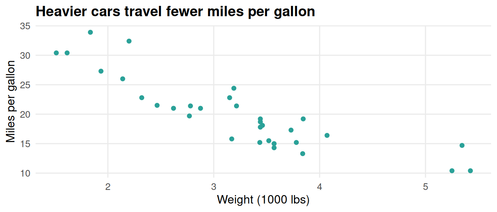

sum(1,1)[1] 2Functional programming is a style of writing code that makes emLab models and software easier to understand, combine, improve, and debug.
Functional programming is a way of structuring code, based on applying functions to data. A rudimentary example of a function in the programming sense is1
sum(1,1)[1] 2A functional programming approach focuses on building functions involving several or many lines of code, which may then be used in various contexts throughout a given project. It can be thought of as describing a method. It contrasts with imperative programming, which involves scripts, where each line gives a computer a command. For comparison:
say_its <- function(sun) {
if (sun == "up") return("Good morning")
if (sun == "down") return("Good night")
}
say_its("up")[1] "Good morning"say_its("down")[1] "Good night"sun <- "up"
if (sun == "up") print("Good morning")[1] "Good morning"if (sun == "down") print("Good night")
sun <- "down"
if (sun == "up") print("Good morning")
if (sun == "down") print("Good night")[1] "Good night"The guiding instinct of functional programming is the DRY principle — Don’t Repeat Yourself. When the same logic is copied across several scripts, every fix or improvement has to be made in every copy, and any copy that gets missed becomes a silent bug. Writing that logic once, as a function, leaves a single place to change it.
A useful rule of thumb comes from Hadley Wickham in R for Data Science:
You should consider writing a function whenever you’ve copied and pasted a block of code more than twice (i.e. you now have three copies of the same code).
DRY is also why functional programming is a prerequisite for the pipeline tools described in Pipeline reproducibility: both targets and GNU Make chain together small, well-named functions or scripts as the nodes of the dependency graph. The cleaner your functions, the cleaner the pipeline.
R is a multi-paradigm language, meaning it can work with either style of programming. However, emLab data scientists rely on R’s many thousands of packages. When you add an R package to your library, you can then build your code using functions written by others.
library(tibble)
tibble(
small = letters[1:3],
big = LETTERS[1:3]
)# A tibble: 3 × 2
small big
<chr> <chr>
1 a A
2 b B
3 c C The functional programming approach would be to build their functions into your own, likely incorporating other functions2 too:
library(stringr)
sentence_square <- function(sentence) {
words = str_split_1(sentence, pattern = " ") # from `stringr`
dimension = ceiling(sqrt(length(words)))
square = matrix(words, nrow = dimension)
return(as_tibble(square))
}
sentence_square("Wherefore art thou Romeo")# A tibble: 2 × 2
V1 V2
<chr> <chr>
1 Wherefore thou
2 art RomeoThis is an example of nesting, where calling sentence_square() indirectly calls the other functions used in its recipe. Part of what makes functional programming such a useful approach is that the arguments3 of a function are accessible to functions nested within it:
pluralize <- function(word) {
paste0(word, "s")
}
pluralize("apple")[1] "apples"group <- function(item, count) {
paste(count, pluralize(item))
}
group("orange", 5)[1] "5 oranges"Here, pluralize() takes its word argument from the item argument of group(). A variable defined within a function is said to be local, and a function’s arguments are among its local variables. Variables that are local to a function are not accessible in a broader scope:
kitchen <- function(light = "on") {
stove = "gas"
return(mget(ls())) # describe local variables
}
lightError:
! object 'light' not foundstoveError:
! object 'stove' not foundkitchen()$light
[1] "on"
$stove
[1] "gas"Combining functions lets you build new behavior; wrapping lets you adjust behavior that already exists. A wrapper is a function whose main job is to call one external function while supplying your preferred defaults or an extra step. The original package is left untouched — you have simply given your project its own, improved version.
A frequent emLab use is enforcing a consistent look for figures. ggplot2 draws plots by adding layers together, but its defaults are generic. Wrapping the styling layers once means every figure in a project matches, without copying the same code into every script:
library(ggplot2)
emlab_style <- function(plot) {
plot +
theme_minimal(base_size = 12) +
theme(
plot.title = element_text(face = "bold"),
panel.grid.minor = element_blank()
)
}
mpg_plot <- ggplot(mtcars, aes(wt, mpg)) +
geom_point(color = "#2aa198") +
labs(
title = "Heavier cars travel fewer miles per gallon",
x = "Weight (1000 lbs)",
y = "Miles per gallon"
)
emlab_style(mpg_plot)
The real payoff is maintainability: if the lab later decides bold titles were a mistake, that change happens in emlab_style() alone, rather than in every script that draws a figure.4
Given input it cannot handle, a function can do one of two things: fail loudly, or carry on and return something wrong. emLab’s guiding principle of accuracy warns that the most costly errors are the silent ones — code that runs cleanly and produces plausible output while doing the wrong thing. Functions that check their own inputs turn those silent errors into loud, immediate ones.
R provides three signals for communicating from inside a function, in increasing severity:
message() — an informational note, such as a progress update. Execution continues.warning() — something looks wrong but is recoverable. Execution continues, with a flag.stop() — a fatal problem. Execution halts before bad output can spread downstream.greet <- function(sun) {
if (!sun %in% c("up", "down")) {
stop('`sun` must be "up" or "down", not "', sun, '".')
}
if (sun == "up") return("Good morning")
if (sun == "down") return("Good night")
}
greet("sideways")Error in `greet()`:
! `sun` must be "up" or "down", not "sideways".Because greet() validates its input, the mistake surfaces right here, with a message naming the problem — rather than several functions deeper, disguised as a strange result. message() and warning() handle the less severe cases:
mean_positive <- function(x) {
if (any(x < 0)) warning("Negative values dropped before averaging.")
message("Averaging ", sum(x >= 0), " of ", length(x), " values.")
mean(x[x >= 0])
}
mean_positive(c(4, 8, -2, 10))Warning in mean_positive(c(4, 8, -2, 10)): Negative values dropped before
averaging.Averaging 3 of 4 values.[1] 7.333333These signals help whoever runs a function. For active debugging — when something is wrong and you need to understand why — browser() is often the most direct tool. Inserting it into a function pauses execution at that exact line, drops you into the function’s environment, and lets you inspect any intermediate value. In the example below, we insert a browser() call after calculating the mean so we can confirm mean_value looks right before it’s returned.
mean_positive <- function(x) {
if (any(x < 0)) warning("Negative values dropped before averaging.")
message("Averaging ", sum(x >= 0), " of ", length(x), " values.")
mean_value <- mean(x[x >= 0])
browser()
mean_value
}
mean_positive(c(4, 8, -2, 10))Warning in mean_positive(c(4, 8, -2, 10)): Negative values dropped before
averaging.Averaging 3 of 4 values.Called from: mean_positive(c(4, 8, -2, 10))
debug: mean_value[1] 7.333333Readability helps whoever reads a function — at emLab, usually a collaborator or your future self. The logic inside a function deserves the same care as any script: descriptive names, consistent style, and comments that explain why. See Code styling and Code documentation for the details.
apply/map over for loops when iterating over a collectionWhen the repetition you need is “do this same thing to every element of a vector or list,” reach for the apply/map family of functions before a for loop. In base R that means lapply(), sapply(), or vapply(); in the tidyverse, purrr::map() and its typed variants (map_dbl(), map_chr(), map_lgl(), …).
words <- c("apple", "banana", "cherry")
# Imperative: a for loop that mutates an output vector
lengths_loop <- integer(length(words))
for (i in seq_along(words)) {
lengths_loop[i] <- nchar(words[i])
}
lengths_loop[1] 5 6 6# Functional: applying nchar() across the vector using sapply()
sapply(words, nchar) apple banana cherry
5 6 6 The functional form is a single expression that takes a collection in and gives a collection out, without making any other changes to the environment in which it runs. The tidyverse equivalent uses purrr::map(), which returns a list, or one of its typed variants when you want a specific output type:
# purrr::map() returns a list
purrr::map(words, nchar)
# map_int() returns an integer vector
purrr::map_int(words, nchar)emLab strives for a functional programming mindset, but here are examples of cases where scripting is sometimes used.
R supports recursive functions, which call themselves:
factorial <- function(n) {
if (n <= 1) return(1) # base case: stop here
n * factorial(n - 1) # recursive case: shrink toward the base case
}
factorial(4)[1] 24However, emLab code prioritizes readability, and recursion is a case where many find the imperative equivalent more intuitive:
n = 4
factorial = 1
while (n > 1) {
factorial = factorial * n
n = n - 1
}
factorial[1] 24Notably, one strong argument for the functional programming paradigm is that someone else probably already made a function that does what you want to do. If you have a good sense of the tooling available and its applicability to your use case, you may sometimes have to write hardly any code at all.
Using the product prod() function from base R:
n = 4
factorial = prod(1:n) # R parses `a:b` as the integers between a and b
factorial[1] 24When composing functions, e.g., f(g(x)), there are sometimes cases with many intermediate states. The two ways to address this while sticking strictly to a functional programming paradigm are nesting functions:
chef_it_up <- function(eggs) {
omelette <- plate(fold(fry(crack(eggs))))
return(omelette)
}or using intermediate local variables5:
chef_it_up <- function(eggs) {
goop <- crack(eggs)
circle <- fry(goop)
burrito <- fold(circle)
omelette <- plate(burrito)
return(omelette)
}Using pipes |> to link up functions changes the state of an invisible variable multiple times, meaning it draws from the imperative programming paradigm. However, it makes code more readable than either purely functional approach, while also using computer memory efficiently by overwriting each step’s input with its output.
chef_it_up <- function(eggs) {
omelette <- eggs |>
crack() |>
fry() |>
fold() |>
plate()
return(omelette)
}It is worth mentioning that pipes pass each step’s results as the first argument of the next function. This tends to work out alright when functions are designed according to the best practice of putting the main variable first. It is also possible to use a placeholder _ so a pipe goes to a different argument:
hit <- function(pitcher = "Who", batter = "What") {
if (pitcher == "Babe Ruth") return("Strikeout!")
if (batter == "Babe Ruth") return("Home run!")
}
first_up = "Babe Ruth"
first_up |>
hit() # Babe Ruth as pitcher[1] "Strikeout!"first_up |>
hit(batter = _) # Babe Ruth as batter[1] "Home run!"Wickham, Hadley. 2019. Advanced R, 2nd ed. Chapman & Hall/CRC. See the chapters on “Functions” and “Conditions,” and the “Functional programming” section. https://adv-r.hadley.nz/.
Wickham, Hadley, Mine Çetinkaya-Rundel, and Garrett Grolemund. 2023. R for Data Science, 2nd ed. O’Reilly. See the “Functions” chapter. https://r4ds.hadley.nz/functions.
Bryan, Jenny. 2020. Object of type ‘closure’ is not subsettable: Debugging in R. This is an excellent talk, slides, and GitHub repo going over best practices for debugging in R. https://github.com/jennybc/debugging.
This section uses R code in Quarto chunks, hence the [1] prefix beside the output.↩︎
Base (a.k.a. vanilla) R includes lots of functions geared towards math and statistics even before you add anything to its library, such as sqrt() and matrix()↩︎
comma-separated items inside the parentheses↩︎
As custom functions accumulate, consider bundling them into an R package of their own — emLab encourages sharing project tooling this way, especially alongside a publication.↩︎
which aren’t retrievable outside of the function↩︎